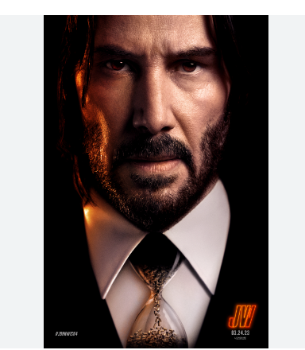
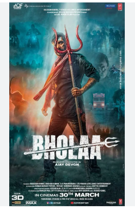
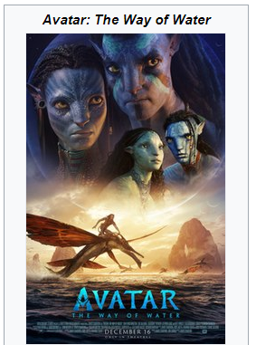

- Home
- Bollywood
- Hollywood
- South Indian
- Follow(Insta)

John Wick; Chapter-4John Wick: Chapter 4 is a 2023 American neo-noir action thriller film directed by Chad Stahelski and written by Shay Hatten and Michael Finch. The sequel to John Wick: Chapter 3 – Parabellum (2019) and the fourth installment in the John Wick franchise, the film stars Keanu Reeves as the title character, alongside Donnie Yen, Bill Skarsgård, Laurence Fishburne, Hiroyuki Sanada, Shamier Anderson, Lance Reddick, Rina Sawayama, Scott Adkins, Clancy Brown, and Ian McShane. In the film, John Wick sets out to get revenge on the High Table and those who left him for dead.

BholaaBholaa is a 2023 Indian Hindi-language action-adventure film[4][5][6] directed by Ajay Devgn and jointly produced by Ajay Devgn FFilms, Reliance Entertainment, T-Series Films and Dream Warrior Pictures. It is a remake of the 2019 Tamil film Kaithi and stars Devgn in the titular role alongside Tabu, Deepak Dobriyal, Sanjay Mishra, Gajraj Rao and Vineet Kumar while Amala Paul, Abhishek Bachchan and Raai Laxmi make special appearances. The film follows an ex-convict who battles criminals while transporting a truck full of poisoned cops to the hospital in exchange for meeting his daughter after ten years of imprisonment.

Avatar: The Way of Water Avatar: The Way of Wateris a 2022 American epic science fiction film directed and produced by James Cameron. He co-wrote the screenplay with Rick Jaffa and Amanda Silver from a story the trio wrote with Josh Friedman and Shane Salerno. Distributed by 20th Century Studios, it is the sequel to Avatar (2009) and the second installment in the Avatar film series. Cast members Sam Worthington, Zoe Saldaña, Stephen Lang, Joel David Moore, CCH Pounder, Giovanni Ribisi, Dileep Rao, and Matt Gerald reprise their roles from the original film, with Sigourney Weaver returning in an additional role[6] while Kate Winslet joined the cast.